One design system,
every rail
A movie & series streaming app — discover, watch and manage a subscription, all from one home screen. I designed the product end to end: UX, UI and the design system.
See the screens ↓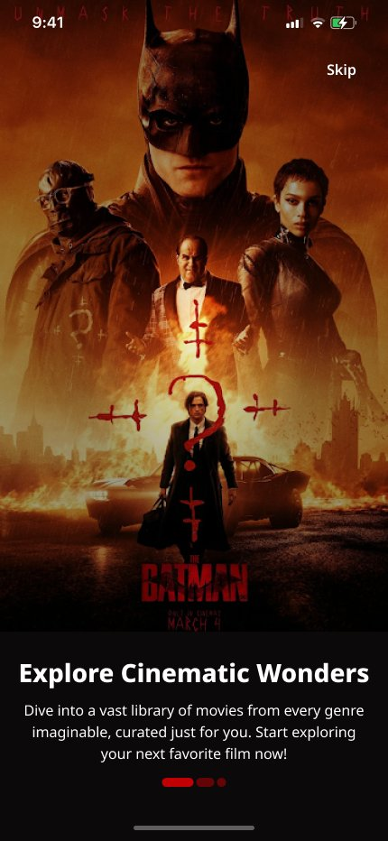
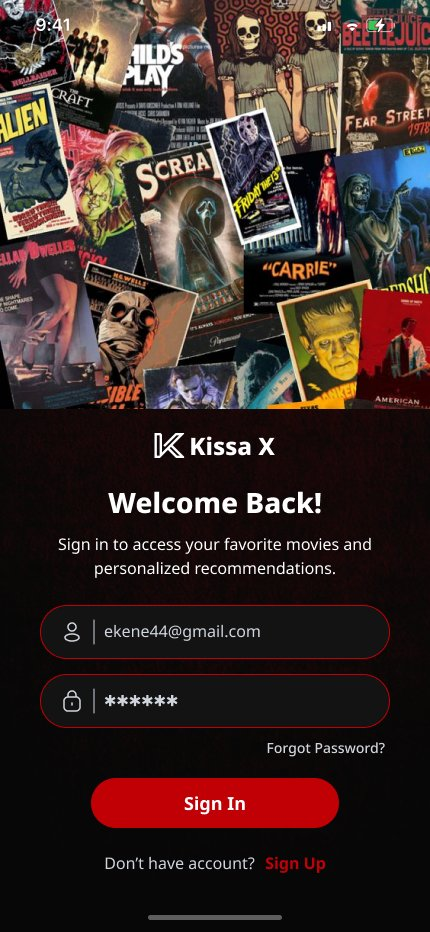
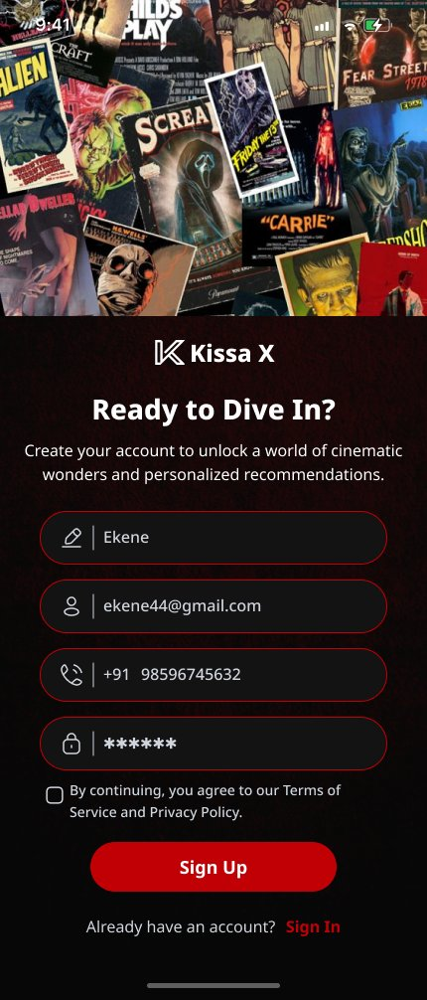
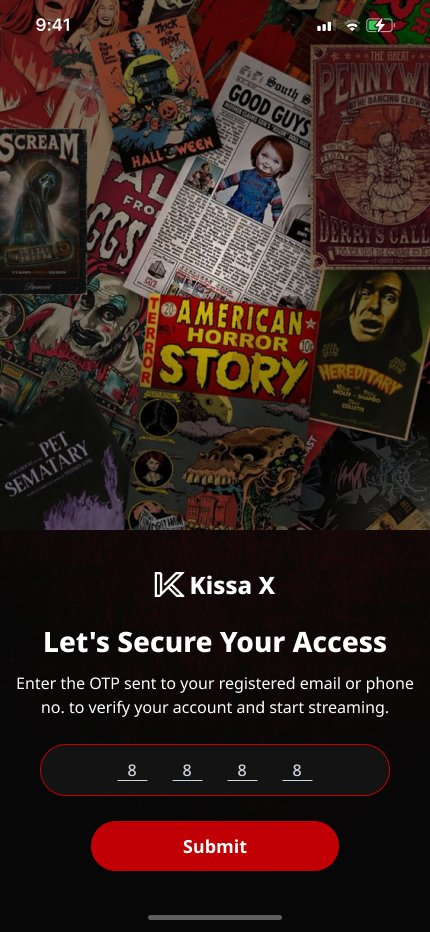
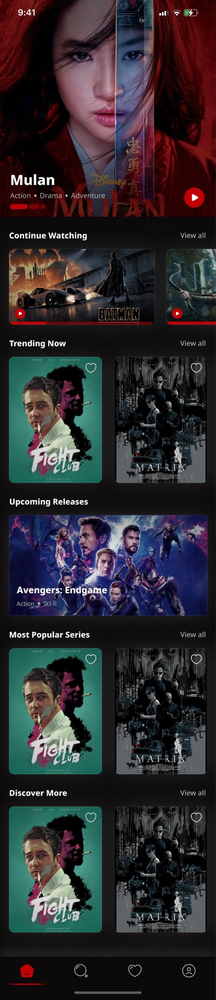
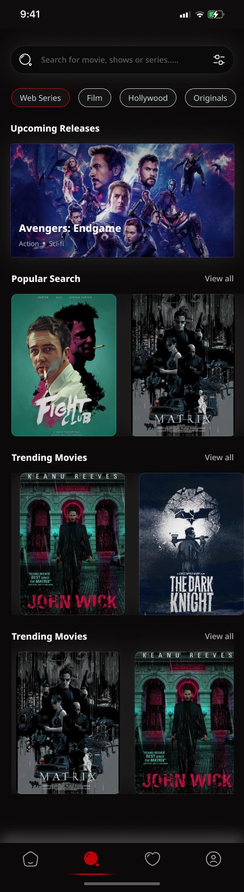
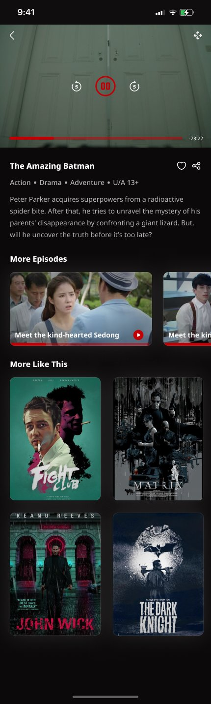
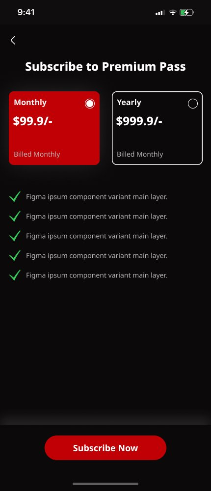
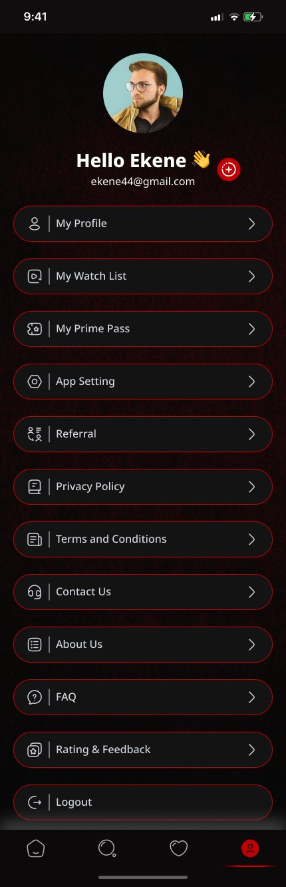
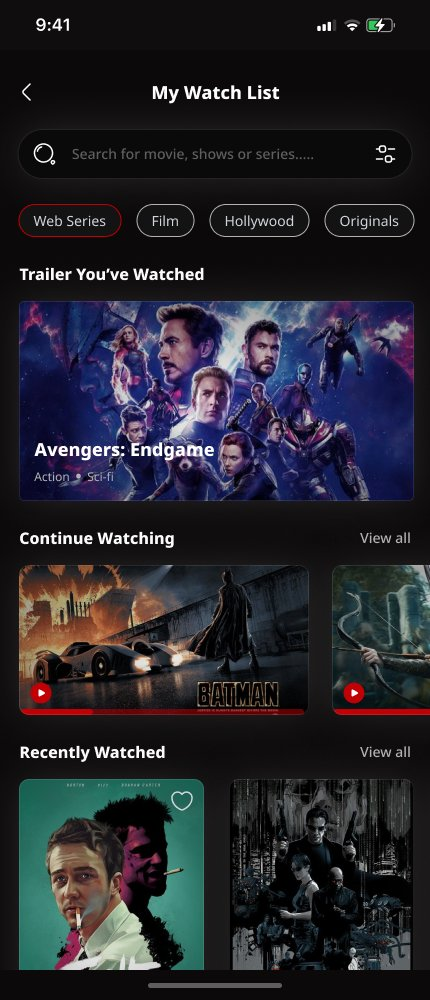
Design Kissa X end to end — a mobile movie and series streaming app spanning onboarding, discovery, playback context, subscription and account management. The build covers sign-up and verification, a content-first home, search and filtering, type-aware detail pages for films and series, a watchlist, multi-profile accounts and the subscription paywall.
A note on context: this is a self-directed redesign, not a shipped or client product — I used it to practice discovery-heavy IA and a subscription flow end to end, from research through a full design system.
My role spanned the whole product: UX — information architecture, flows and every validation state; UI — every high-fidelity screen; and the design system — a dark, poster-forward visual language built to let the content lead.
Streaming apps live or die on discovery. With a growing catalogue, a viewer needs to find something to watch in seconds, not scroll for ten minutes across every title. Films and series also carry different context — a film needs a runtime and a certificate, a series needs which episode you're on — but most catalogues flatten both into the same card.
And a subscription product needs a paywall that converts without feeling like a wall: clear pricing, a visible choice between monthly and yearly, and a plain reason to say yes. Goal: content-first discovery that tells film and series apart, and a subscription flow honest enough to convert.
A growing catalogue with no fast way to decide what to watch, and film/series treated the same on every card.
Curated home rails, type-aware detail pages, and a paywall with visible pricing and a clear reason to subscribe.
I benchmarked Netflix, Prime Video and Disney+ to see how they structure discovery and pricing, then mapped Kissa X's own catalogue against it. Three decisions followed.
Rails over search — Continue Watching, Trending Now, Upcoming Releases and Most Popular Series surface relevant titles before a viewer has to type anything. Detail pages branch by type — a film shows runtime, genre and certificate; a series shows a "More Episodes" rail with its own thumbnails and progress. And profiles are first-class, not a settings toggle — adding a profile sits right next to sign-up, the way a household actually shares one subscription.
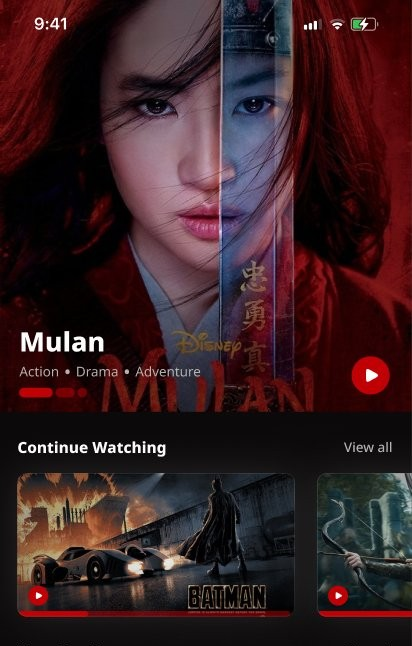
Every home rail groups titles by intent rather than genre alone — Continue Watching, Trending Now, Upcoming Releases, Most Popular Series and Discover More — so the first screen does most of the recommending. Search adds category chips (Web Series, Film, Hollywood, Originals) over a Popular Search and Trending Movies rail, for the visits that start with a specific title in mind.
The subscription screen puts Monthly against Yearly side by side with the saving obvious, backed by a plain checklist of what Premium unlocks — nothing to hunt for in fine print. Adding a household profile is a tap away from sign-up, each with its own avatar and watch history, and the watchlist screen separates Continue Watching, Recently Watched and saved trailers so a return visit picks up exactly where it left off.
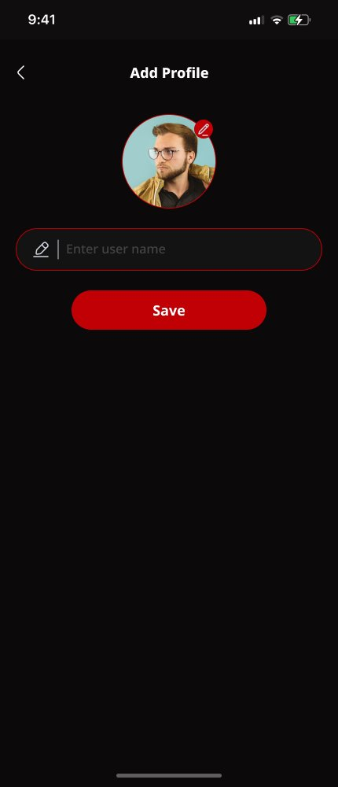